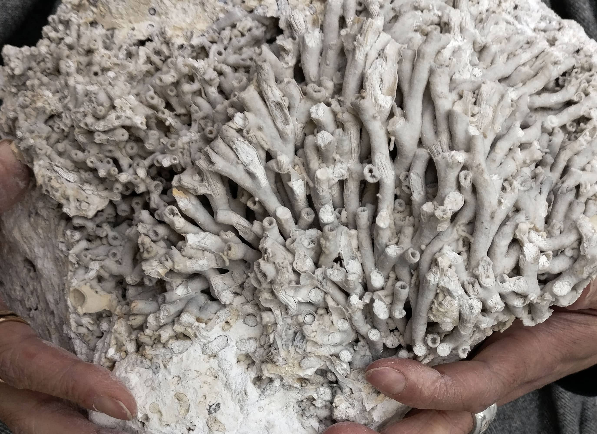
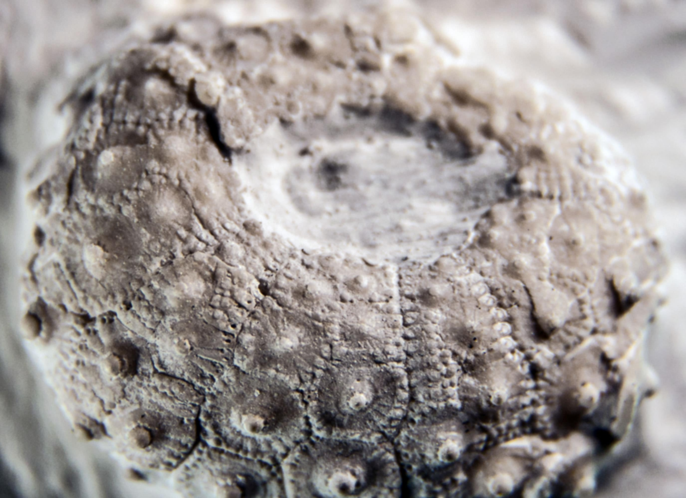

Geomuseum Faxe

Rejs tilbage i tiden til dengang Danmark var dækket af et dybt hav, og der voksede et stort koralrev, hvor Faxe ligger i dag. Her levede hajer og krokodiller sammen med mere end 500 andre slags dyr.
På Geomuseum Faxe kan du se den dramatiske historie om den sidste store masseuddøden, der hændte for 66 millioner år siden. Du får også fortællingen om hvordan livet rejste sig på ny og dannede det unikke koralrev.

Du kan også gå på fossiljagt i Faxe Kalkbrud og finde dine egne 63 millioner år gamle fossiler.
Geomuseum Faxe's geologer Jesper og Bo vandrer ofte ned i Faxe Kalkbrud for undersøger hvordan bruddet udvikler sig. Under en indsamlingstur fandt Bo en stor og helt usædvanligt velbevaret 63 millioner år gammel koral.